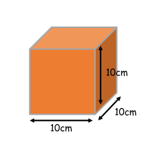
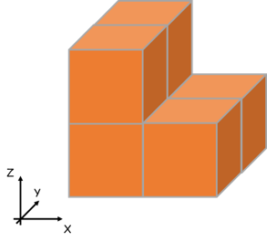
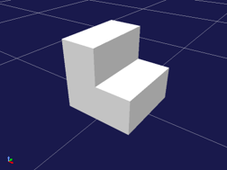

ボックステレインの生成¶
ここでは、ボックステレインのモデルファイルを生成するための、入力ファイルの記述の仕方とモデルファイルの生成の仕方を説明します。
入力ファイルの作成¶
ボックステレインビルダでは入力ファイルとしてCSVファイルを使用します。 入力ファイルを作成するときは、任意のテキストエディタまたはExcel・Calc等の表計算ソフトウェアを使用してください。 ここでは、Calcを使用して入力ファイルを作成しています。
ボックステレインビルダでは、表計算ソフトウェアの各セルをボックステレインの１つのブロックと見なします。 １つのブロックは縦10cm・横10cm・高さ10cmです。入力ファイルの各要素には、このブロックをZ軸方向から見て何個積み上げるかを記述します。 行数・列数に制限はありませんが、全ての行の要素数は同じ数にしてください。
下図の例の場合、入力ファイルには次のように記述します。
2,1
2,1
ここで１行はX軸方向、１列はY軸方向に対応します。
Note
各要素に０以下の数値は入力できません。
ボックステレインの作成¶
以下の手順でボックステレインのモデルファイルを作成します。
- 「メニュー」 - 「ツール」から「ボックステレインビルダ」を選択する。
- 必要に応じてダイアログ上の「スケール」の値を変更する。
- 「読み込み」ボタンを押し、表示されるダイアログから入力ファイルを選択する。
- 「保存」ボタンを押し、表示されるダイアログで保存先を指定する。
- ダイアログでファイル名を入力し、「保存」を押す。
上記の例の入力ファイルを使用した場合、下図のモデルファイルが生成されます。
